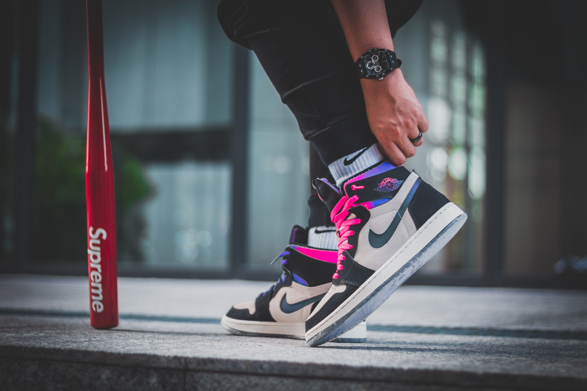
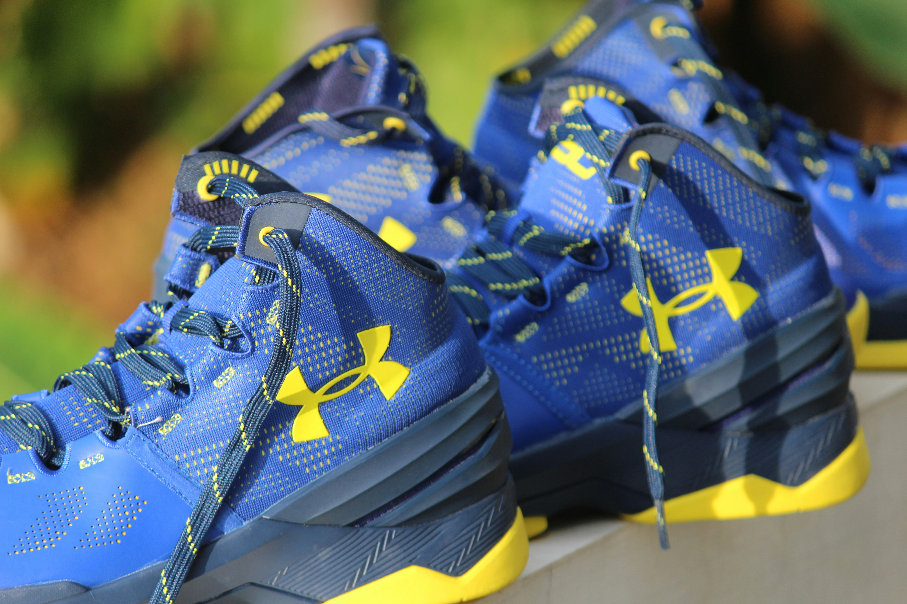
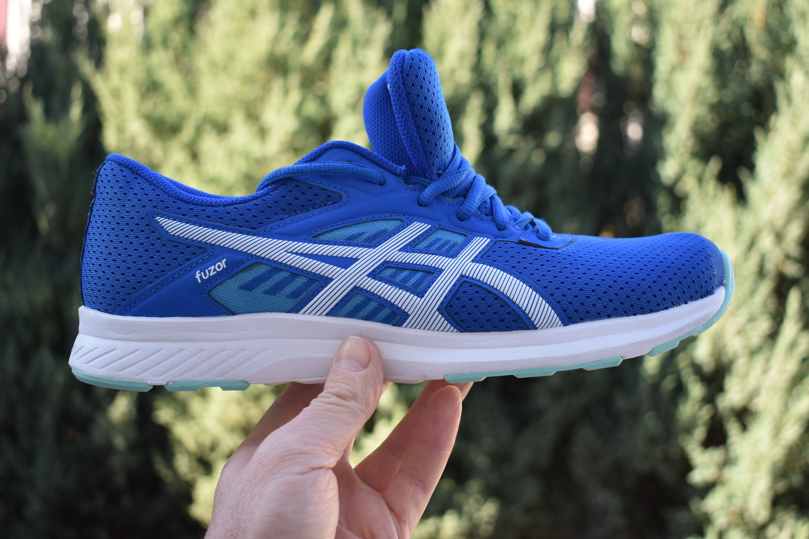

5 Merek Sepatu Olahraga Terbaik
Nike

Nike adalah salah satu merek terkemuka dalam industri sepatu olahraga. Mereka dikenal karena inovasi teknologi seperti Nike Air, Zoom Air, dan Flyknit yang memberikan kenyamanan dan performa maksimal. Dengan desain yang stylish dan beragam pilihan untuk berbagai macam olahraga, Nike telah menjadi favorit bagi banyak atlet dan penggemar olahraga.
Adidas

Adidas adalah merek lain yang sangat dihormati dalam dunia sepatu olahraga. Mereka menawarkan sepatu dengan teknologi canggih seperti Boost dan Primeknit yang memberikan responsif dan dukungan yang luar biasa. Dengan desain yang ikonik dan kemitraan dengan atlet terkenal, Adidas menjadi pilihan utama bagi mereka yang mencari sepatu yang tangguh dan bergaya.
Under Armour

Under Armour dikenal karena inovasi dalam material dan teknologi yang digunakan dalam sepatu olahraganya. Mereka fokus pada performa dan kenyamanan dengan teknologi seperti UA HOVR dan Micro G yang memberikan energi yang responsif dan penyerapan kejut yang baik. Dengan fokus pada atletis dan desain yang modern, Under Armour menjadi pilihan yang populer di kalangan atlet dan penggemar olahraga.
New Balance

New Balance dikenal karena kualitas dan kenyamanan sepatu olahraganya. Mereka menawarkan berbagai pilihan untuk berbagai macam olahraga dengan teknologi seperti Fresh Foam dan ENCAP yang memberikan dukungan dan amortisasi yang luar biasa. Dengan desain yang klasik dan fokus pada ergonomi, New Balance menjadi merek yang diandalkan oleh banyak pelari dan atlet lainnya.
Asics

Asics adalah merek yang sangat dihormati dalam komunitas lari dan olahraga lainnya. Mereka dikenal karena teknologi seperti Gel Cushioning System yang memberikan penyerapan kejut yang superior dan dukungan yang optimal. Dengan desain yang ergonomis dan fokus pada performa, Asics menjadi pilihan yang populer bagi mereka yang mencari sepatu yang dapat meningkatkan pengalaman olahraga mereka.